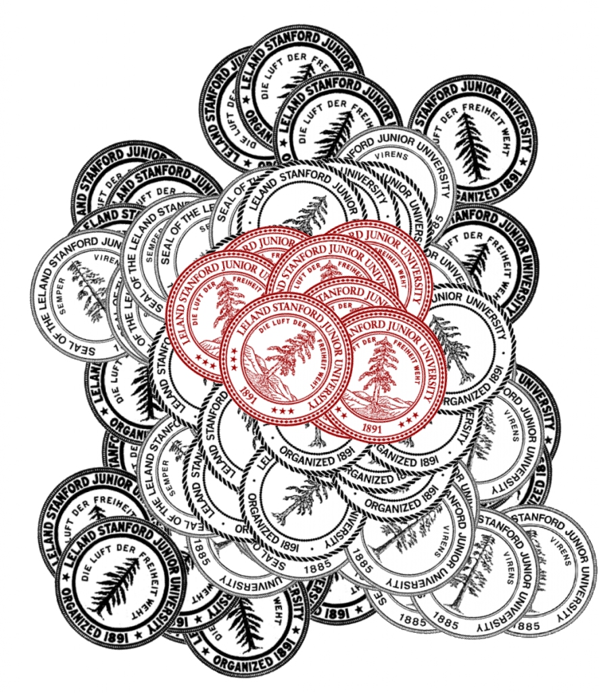

Stanford pogs, made with Inkscape's new spray tool.
Inkscape released a new version of it’s excellent SVG editor on August 23rd and it continues, in my mind, to be the most intuitive and useful visualization tool available. It’s invariably the fist thing I use when approaching a new topic or to quickly describe some data model or process. The no-nonsense editor is a credit to the open source community and anyone with an interest in visualization who feels intimidated by the more involved vector editing packages should download it immediately and start writing algorithms with a visual language.
Vector graphics are drawn based on mathematical descriptions of shapes, and as such creating vector graphics using a package like Inkscape is, in fact, writing code. It’s a true visual programming language, as opposed to Visual Basic or Visual C++ or Model Builder in ArcGIS, which allow you to graphically describe relationships but still requires diving into the text to establish relationships and actions. I still use Inkscape to build any vector graphics used in Flash Pro, even though the import process is annoying, which brings me to a more contentious point.

While animation and interactive elements can be integrated into SVG, if you’re building an interactive web app that needs to allow non-trivial access to large amounts of data represented in graphical form, the best platform still seems to be Flash. Flash, and especially the more multimedia-focused Flash Professional, is also heavily vector-graphics oriented. There’s been a lot of criticism directed toward Flash recently, especially with Apple’s decision not to support it in their mobile operating system, but the arguments are primarily geared toward delivery of video and breaking the monopoly Adobe has on web video. As far as developing web-based applications to analyze and visualize data, the in-browser options still can’t compete with the performance and ease-of-use of Flash. Fortunately for those of us who want to continue to develop in Flash and take advantage of the amazing multitouch platforms, the continued penetration of Android into the smartphone and tablet market mean Apple’s decision isn’t the final word on the subject.
SVG is still the future, and not in the sense that vector graphics are tremendously revolutionary (The attack on the first Death Star was planned in vector graphics, after all) but rather, the creation of code and the manipulation of logical and mathematical constructs as born visual elements will assuredly open up complex programming to a much wider audience. Much of our world runs on code, and the fact that that code is, well, in code, prevents much of our world from interacting with it. A visual language of coding, something like SVG on steroids presented in an intuitive environment like that found in Inkscape, would allow the creation of complex software to become a less onerous task. Software is too pervasive to allow its creation and understanding to be under the control of an elite class, and tools like Inkscape, still not even to version .5, will allow this to change.